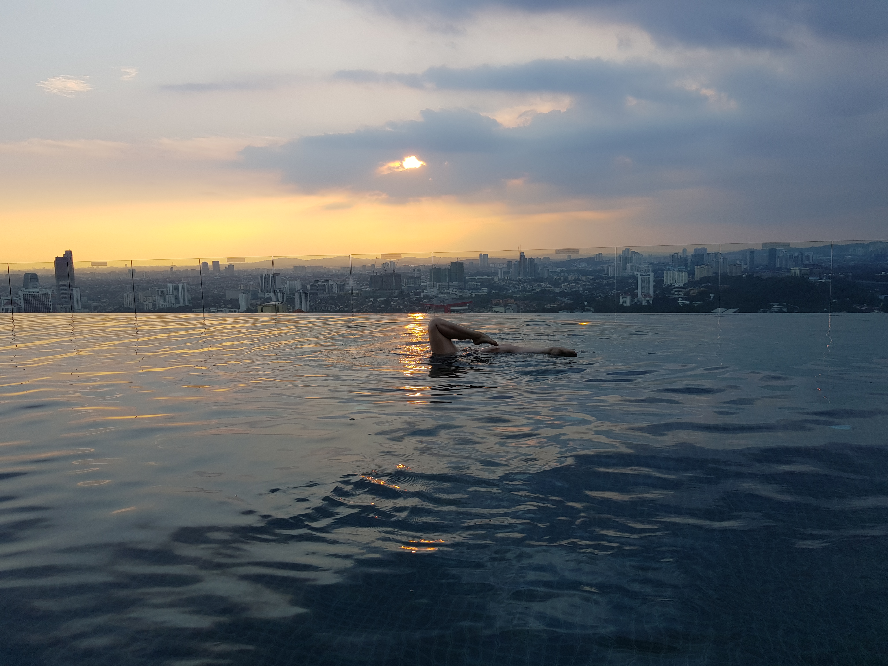

I believe that great design happens at the intersection of empathy, technology, and a lot of curiosity.
Hi, I'm Alessia!
I’m a designer fueled by empathy and fascinated by code, constantly looking for ways to humanize complex technology.
I don’t fit neatly into one box, and I don’t want to. I’m flexible, quick to adapt, and I love figuring things out with a team.
Throw me into a product with new tech? I’ll learn it. Need to bridge the gap between creative vision and technical reality? I’m on it.
I make sure what we design is actually what gets built.
Cultivating Empathy
I believe that to design for people, you must understand them. My passion for travel isn't just about sightseeing; it's about exploring new cultures to truly empathize with people and understand their values and principles.
Just as we tailor an application or website to a specific target audience, traveling helps me understand the "user" in the first place. Immersing myself in these differences enriches the empathy that fuels my creativity.
I thrive on connection. My background in tutoring taught me how to break down complexity, but my real passion is bringing teams together in a way that everyone feels heard.
Whether I'm explaining a complex backend issue to a designer or pitching a concept to stakeholders, I bring clarity and enthusiasm. I believe technology should be understandable, accessible, and fun—and I bring that energy to every team I join.

Outside of Work
When I'm away from the keyboard, you might find me...
Swimming
Languages
Painting
Exploring
Ready to collaborate?
Whether you need a UX designer who codes, a facilitator, or just a chat.